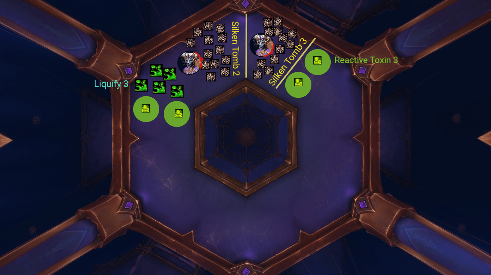

Queen Ansurek Guide and Tips
For this HTML Week 1 project for Promineo Tech's Front End Development program,
I will go over the main mechanics and things to look out for when doing the
final fight in the World of Warcraft raid Nerubar Palace, where you will be fighting
Queen Ansurek over the course of 3 phases and 1 intermission.
Things to Look Out For During Phase 1
-
Throughout the first phase, and almost immediately after starting the fight,
The boss will cast Liquefy on whichever tank she is currenly attacking, giving
them an increased damage taken debuff for 30 seconds, as well as she drops an acid
pool under herself and every member of the raid where they are standing. Standing in
this acid will cause you to take damage. After each instance of this happening, the boss
will need to be moved to ensure everyone has a safe space near the boss to continue to
deal damage or heal without being in immediate danger.
-
Also throughout the first (and third) phases, there will be several instances of web blades
that spawn that will need to be dodged. They spawn under current player locations, and several
extensions into different directions that also need to be dodged. Anyone hit by the blades will
take a large amount of damage.
-
A few times throughout the phase Queen Ansurek will cast "Silken Tombs" on all players of the raid,
which after a few seconds will root everyone in place, and these need to be broken, either by dealing
damage to the tombs themselves, or using an ability to break free from roots (most classes have a way,
but not everyone does). After the roots have been broken, they will leave behind a small web puddle
that will deal damage to those standing in it, as well as slows them as they try to leave. After
each cast of this ability, this boss will need to be moved by the tanks to ensure space for everyone
to be able to walk around and be safe near the boss.
-
3 times during the first phase the boss will send out several "Reactive Toxin" debuffs that will
fall off after a few seconds, pushing your character in the direction you are facing and leaving
behind a small green circle with a little bubble in the middle. Don't touch that little bubble
until Queen Ansurek starts to cast Venom Nova. At this point, you need to split the raid evenly
into the 2 Reactive Toxin circles and pop them to jump over the cast from the boss. Failing to
do so will cause significant raid wide damage, almost certainly leading to a wipe for that pull.
After the pop, everyone will have a debuff that after a few seconds will go off and cause damage
to everyone, so healers will need to watchout for that. Also after the pops happen, a few seconds
after waves will spawn from those locations that need to be dodged or you will take a large amount
of damage. Now after all that has settled, the 2 people who popped the bubbles will have a debuff
on them not allowing them to pop again during that pull, unless you risk taking fatal damage from
doing so.
Here is an example of how the boss will need to be moved after certain mechanics happen during phase 1.

Things to Look Out For During the Intermission and Phase 2
After completing 3 cycles of the "Reactive Toxin/Venom Nova" combination (or getting the boss to 35%),
the intermssion phase will begin. The boss will jump to the middle of the arena and surround herself in
a shield that will need to be broken by dealing damage. A few things that will need to be kept in mind
during the intermission are mentioned below.
-
Queen Ansurek will attach what is called a "predation thread" to each member of the raid. Almost immediately
she will begin to cast "Wrest" that will pull all players towards her. Make sure you are far enough away as
getting too close to the boss during this will cause you to die.
-
In between each cast of "Wrest", the players will need to be dealing damage to the bosses shield, as well as
dodging toxin waves that will be coming from under the boss. Getting hit by one will cause significant damage
to players. Also while dodging, the players will be slowly pulled towards the boss, so make sure to keep moving
to avoid being pulled into the boss and dying.
Phase 2
After breaking the bosses shield, she will summon 2 Ascended Voidspeakers on opposite sides of the platform near
the phase 2 platforms. Split the raid into 2 groups, making sure there is a tank and at least 2 healers on each side.
While killing this mob, make sure to be interrupting its cast "Shadowblast", as failing to interrupt it will result
in the targeted player dying. After the Ascended Voidspeakers are dead, they leave behind a small condensed explosion
that after a few seconds will cause players to jump in the direction they are facing, so make sure you are facing where
you want to go.
-
There are 3 platforms on each side of mobs that will need to be dealt with. You can't move onto the next platform
without first defeating the mobs on the current platform. After those mobs have been dealt with, there are 2 conduits
on the edge of the platform that when both clicked, will create a web bridge leading to the next platform. After
crossing to the next platform, rinse and repeat what you did on the first platform, clicking the conduits and moving
onto the final platform.
-
On the final platform, another Ascended Voidspeaker will spawn, so make sure to again be interrupting the "Shadowblast"
cast and making sure it dies in a good position for its explosion to send you up onto the final platform to finish the
fight on. After leaping to the final platform, you have a few seconds of dialogue from the boss where you can do damage
to her and setup for the final phase of the fight.
Things to Look Out For During Phase 3
As mentioned above, once on the final platform you have a little time to set up and move to the correct positons so that after
the dialogue is done, you can get right into the final phase of the fight. As I had mentioned during the "Things to Look Out For
During Phase 1" section of this project, there will be web blades that'll need to be dodged throughout the final phase. Since I
have mentioned it before, I will be only focusing on the new mechanics in the phase.
-
Almost immediately after jumping onto the platform, Queen Ansurek will cast "Infest" on the current tank, after the cast is done,
the tank with infest needs to move away from the boss while the other tank taunts her and takes the second part of the combo "Gorge",
which puts a significant increased damage taken debuff on the tank who took the hit. Once the infest debuff expires and the mobs have
spawned, 2 things need to happen. 1. The tank need to swap places to avoid anyone dying, and 2. the dps in the raid need to focus down
the little mobs that spawned as if they reach the boss, she becomes empowered and will do raid wide damage after each attack, resulting
in a wipe for that pull.
-
After the mobs have been killed, the next mechanic to happen is "Abyssal Conduit". The boss will put a debuff on 2 players at random
that after a few seconds will expire and leave behond a portal. Make sure to put one near the outer edge of the platform and the other
near the inner edge of the platform. After that happens, Queen Ansurek will begin to cast "Frothing Gluttony". She will teleport to hang
over the middle hole of the platform and summoning a ring that will quickly be closing onto her position. While this ring is shrinking,
the boss will be slowly pulling players towards her, trying to make them fall into the hole in the middle of the platform, falling to their
deaths. Make sure to be moving to avoid that from happening. To avoid the ring from collapsing onto the players and causing significant damage,
one the ring passes the outer portal that was placed earlier in the fight, the players can enter the inner portal, sending them to the outer
portal, letting them portal over the ring and avoiding the damage. After taking the portals though, each player will have a small void ring spawn
on them that after a few seconds will do damage to everyone in their circle, so make sure to spreadout after portaling to avoid others.
-
After the first casting of "Frothing Gluttony" and the second casts of "Infest" and "Gorge", the boss will spawn several acolytes in the inner
ring of the platform.
-